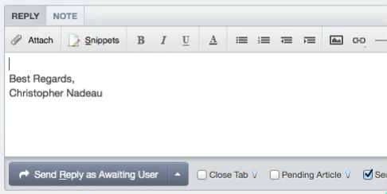
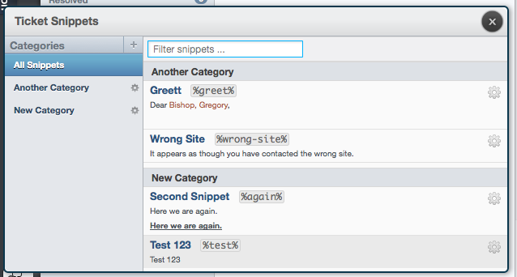

The snippets feature in DeskPRO has been improved for tickets and chats.
You can now add shortcut codes to snippets. When you type a shortcut code into the replybox, the full snippet is automatically expanded. Use shortcut codes to quickly insert common snippets without having to open the snippets manager.

The snippets manager now includes an "All Snippets" section which shows you all of your defined snippets in a single list. This makes the newly-added filtering feature very useful. Just type a few characters of the snippet title you are looking for, and the list is filtered down in real-time. You can also use the up and down keys on your keyboard to select a snippet in your list. Once highlighted, just press the enter key to insert it into your reply.
